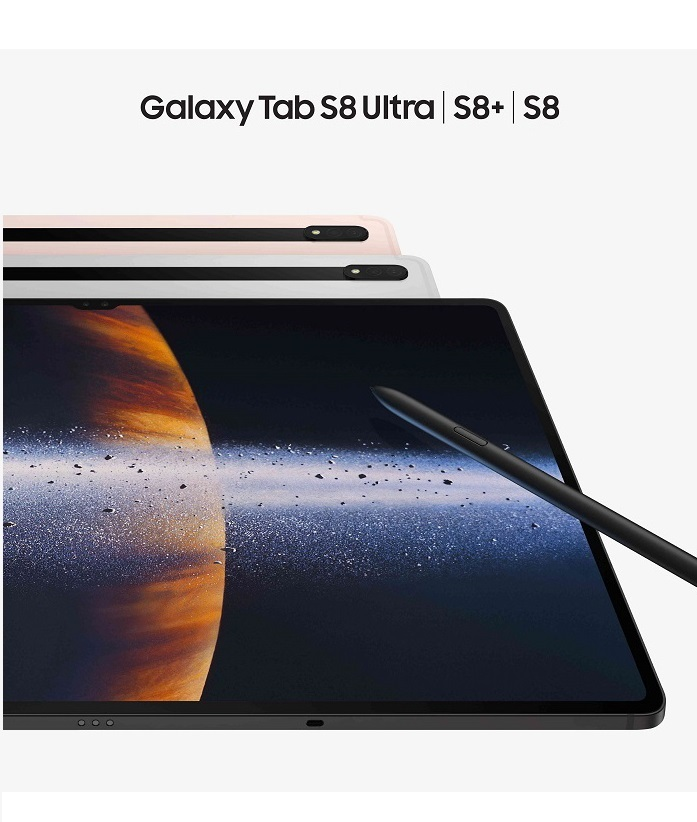

|  |
| △갤럭시탭 S8 시리즈. [사진 제공 = 삼성전자] |
삼성 GOS 사태 어디까지… 갤럭시 S22 이어 갤럭시탭 S8도 긱벤치서 퇴출
최근 불거진 GOS 사태로 삼성전자가 유례없는 불명예를 안고 있다. GOS 사태의 발단이 된 갤럭시S22가 세계 최대 기기 성능 측정 사이트에서 퇴출된 데 이어 갤럭시탭S8도 평가목록에서 삭제되면서다.
15일 긱벤치는 공식 트위터를 통해 "우리는 삼성의 GOS가 어떻게 게임과 앱의 성능을 저해하는지 알게됐다"며 "안드로이드 벤치마크 차트에서 갤럭시탭S8을 삭제했다"고 밝혔다. 긱벤치는 삼성전자 측의 사전 고지 없는 GOS 강제 작동은 성능을 조작한 것이라고 보고 있다.
앞서 긱벤치는 지난 5일에도 "우리는 (GOS 강제 실행을) 성능측정 조작으로 판단했다"며 갤럭시S22, 갤럭시S21, 갤럭시S20, 갤럭시S10 시리즈를 평가목록에서 삭제했다.
긱벤치는 컴퓨터와 스마트폰의 성능측정(벤치마크) 사이트다. 소비자들이 제품을 구입할 때 참고하는 주요 지표 중 하나다. 삼성전자 기기가 긱벤치 평가에서 제외된 것은 이번이 처음이다. 화웨이, 원플러스 등 중국 제조사 외에는 유례가 없다.
GOS는 배터리 소모를 줄이고 저온화상 등을 막기 위해 CPU와 GPU 성능을 제한하는 일종의 안전장치다. 삼성은 최근 5년 새 출시된 갤럭시 스마트폰에 GOS를 탑재했고, GOS를 비활성화하기 위해선 유료앱을 사용해야 했다.
하지만 삼성은 갤럭시S22부터 특정 앱 실행 시 무조건 GOS 기능이 작동하도록 했고, 유료 앱으로도 GOS를 삭제할 수 없도록 했다. 결국 고성능 유지를 원하는 사용자들 사이에선 불만이 나왔고, 삼성은 지난 11일 업데이트를 통해 GOS 강제 사용을 해제했다.
삼성의 이 같은 조치에도 GOS 사태는 좀처럼 가라앉지 않는 분위기다. 일부 사용자들 사이에선 "게임을 잘 할 수 있는 스마폰 성능이라고 광고했는데 속았다" "100만원이 넘는 저사양 스마트폰하며 소비자를 기만했다"며 분노를 표출하고 있다. 현재 공정거래위원회는 해당 사안을 조사 중에 있고, GOS 피해 소비자들은 삼성전자를 상대로 집단소송을 준비하고 있다.